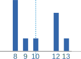
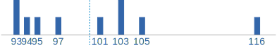
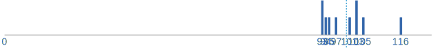
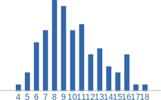
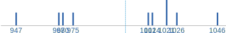
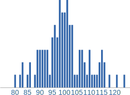
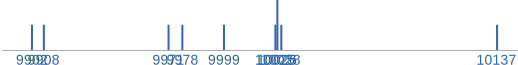
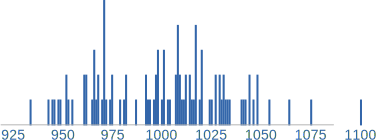

Is Pi Normal?
A Simply Normal Number has all its digits spread out as if each one is chosen by a throw of a dice.
A dice can have 10 sides

And we get something like this:

Over the infinite sequence of decimal digits:
- 110 are 0, 110 are 1, 110 are 2, etc (this makes it "simply normal")
But to be "normal" (without the "simply" in front) we also need:
- 1100 are 00, 1100 are 01, 1100 are 02, etc
- 11000 are 000, 11000 are 001, 11000 are 002, etc
- and so on, for every group of digits
Is this the case for Pi ?
To investigate let us count how many of each single digit there are, and see if they appear more or less often than expected.
We also need to do this for 2-digit pairs, 3-digit groups, etc.
Let us have a go!
A Hundred Digits
Here are the first 100 digits of Pi:
| 314159265358979323846264338327950288 4197169399375105820974944592307816 406286208998628034825342117067 |
With 100 digits and ten possibilities (0,1,2,3,4,5,6,7,8,9) we should get 10 of each digit, right?
Well I count 8 "0"s, does that seem right?
Expecting a perfect 10 of each digit is unrealistic of course, so maybe just 8 is fine.
Here is the count for each digit:
| Digit | Count |
|---|---|
| 0: | 8 |
| 1: | 8 |
| 2: | 12 |
| 3: | 12 |
| 4: | 10 |
| 5: | 8 |
| 6: | 9 |
| 7: | 8 |
| 8: | 12 |
| 9: | 13 |
They are mostly around 10, but wow: "9" occurred 13 times!
Should that be expected? Let us count the counts:
- 4 digits (0,1,5 and 7) occur 8 times,
- 1 digit (6) occurs 9 times,
- 1 digit (4) occurs 10 times,
- 3 digits (2,3 and 8) occur 12 times and
- 1 digits (9) occur 13 times
As a graph:

They are kind of near 10, but also a little spread out ... is this "normal"?
Let us try two-digit pairs:
| Digits | Count |
|---|---|
| 00: | 0 |
| 01: | 0 |
| 02: | 1 |
| 03: | 1 |
| 04: | 0 |
| 05: | 1 |
| 06: | 2 |
| ... | ... |
| 98: | 1 |
| 99: | 2 |
Mostly 0's and 1's. We need more raw data!
A Thousand Digits
Using the first thousand digits of Pi gets us this:
| Digit | Count |
|---|---|
| 0: | 93 |
| 1: | 116 |
| 2: | 103 |
| 3: | 103 |
| 4: | 93 |
| 5: | 97 |
| 6: | 94 |
| 7: | 95 |
| 8: | 101 |
| 9: | 105 |
Counting the counts:

Zoomed out:

It now looks more grouped around 100, our first hint that Pi might be "normal".
Let's look at two-digit pairs:
| Digits | Count |
|---|---|
| 00: | 7 |
| 01: | 10 |
| 02: | 10 |
| 03: | 9 |
| 04: | 4 |
| 05: | 14 |
| 06: | 8 |
| 07: | 6 |
| ... | ... |
| 93: | 14 |
| 94: | 11 |
| 95: | 16 |
| 96: | 9 |
| 97: | 7 |
| 98: | 8 |
| 99: | 11 |
Good, we are getting values around 10, but let us see the count of counts:

Wow, it looks nicely clustered around 10, maybe a little skewed.Let's go for more data!
Ten Thousand Digits
Using the first ten thousand digits of Pi gets us this:
| Digit | Count |
|---|---|
| 0: | 968 |
| 1: | 1026 |
| 2: | 1021 |
| 3: | 975 |
| 4: | 1012 |
| 5: | 1046 |
| 6: | 1021 |
| 7: | 970 |
| 8: | 947 |
| 9: | 1014 |
And the count of counts:

And for two-digit pairs:
| Digits | Count |
|---|---|
| 00: | 85 |
| 01: | 103 |
| 02: | 98 |
| 03: | 103 |
| 04: | 98 |
| 05: | 89 |
| 06: | 101 |
| 07: | 93 |
| ... | ... |
| 94: | 98 |
| 95: | 107 |
| 96: | 106 |
| 97: | 88 |
| 98: | 100 |
| 99: | 91 |
And as a count of counts:

It is starting to look like a normal distribution isn't it?

Hundred Thousand Digits
Using the first hundred thousand digits of Pi gets us this:
| Digit | Count |
|---|---|
| 0: | 9999 |
| 1: | 10137 |
| 2: | 9908 |
| 3: | 10026 |
| 4: | 9971 |
| 5: | 10026 |
| 6: | 10028 |
| 7: | 10025 |
| 8: | 9978 |
| 9: | 9902 |
The count of counts is:

And for two-digit pairs:
| Digits | Count |
|---|---|
| 00: | 998 |
| 01: | 1027 |
| 02: | 962 |
| 03: | 993 |
| 04: | 968 |
| 05: | 1007 |
| 06: | 1009 |
| 07: | 1017 |
| 08: | 1001 |
| ... | ... |
| 94: | 1033 |
| 95: | 1014 |
| 96: | 952 |
| 97: | 934 |
| 98: | 997 |
| 99: | 968 |
And the count of counts:

The numbers are all around 1000, and, using the standard deviation calculator gets a standard deviation of only 32.3, which is a reasonably tight grouping, don't you think?
Summary
Just looking at single digits:
| Digit | 100 | 1000 | 10,000 | 100,000 |
|---|---|---|---|---|
| expect: | 10 | 100 | 1000 | 10000 |
| 0: | 8 | 93 | 968 | 9999 |
| 1: | 8 | 116 | 1026 | 10137 |
| 2: | 12 | 103 | 1021 | 9908 |
| 3: | 12 | 103 | 975 | 10026 |
| 4: | 10 | 93 | 1012 | 9971 |
| 5: | 8 | 97 | 1046 | 10026 |
| 6: | 9 | 94 | 1021 | 10028 |
| 7: | 8 | 95 | 970 | 10025 |
| 8: | 12 | 101 | 947 | 9978 |
| 9: | 13 | 105 | 1014 | 9902 |
Just by eye we can see that the more digits we use the more the counts tend to group around the expected value.
This is called the "Law of Large Numbers": in the long run random events tend to average out at the expected value.
We see the same thing with two-digit pairs.
So this increases our confidence that Pi is a normal number.
Conclusion
So it seems that the single digits, and double digit pairs, occur no more frequently than random chance. At least within the first 100,000 digits.
But we need to check more digits and also 3-digit, 4-digit etc groups. A very big job.
Research
People with access to powerful computers have checked trillions of digits of Pi:
(external link) Digit Statistics of the First 22.4 Trillion Decimal Digits of Pi
and have also found no reason to doubt that Pi is a Normal Number. Not a proof, just a very strong suspicion that Pi is normal.
Why is this Important?
Firstly, isn't it curious that the digits of Pi (which form an exact sequence) nonetheless seem to be randomly distributed?
But the other mind-boggling implication is that an infinite number of randomly occuring digits will contain every finite sequence of digits, including:
- your pin number
- your phone number
- your birth date
- the winning numbers in next weeks lottery
And by simply converting text to digits (such as hello = 8 5 12 12 15) then Pi's digits will also include:
- your name
- your address
- all of your text messages
- any or every book you could imagine
- and perhaps the secret to life?
Now if we could also get an index to where those things are ...